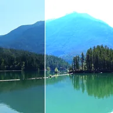

Belichting

Bootst fotografische belichting na met stops, verschuiving en gammacorrectie. Doorzichtige delen oplichten laat deels transparante pixels, zoals een vervaagde rand, feller worden dan wit.
Stops maakt het beeld lichter of donkerder zoals een camera dat doet: één stop verdubbelt of halveert het licht, en het bereik is -4 tot 4. Verschuiving maakt alles gelijkmatig lichter of donkerder, en Gamma verandert de middentonen.
Instellingen
| Instelling | Type | Bereik | Standaard |
|---|---|---|---|
| Stops | Getal | -4 tot 4 | 0.7 |
| Verschuiving | Getal | -0.5 tot 0.5 | 0 |
| Gamma | Getal | 0.1 tot 10 | 1 |
| Doorzichtige delen oplichten | Aan of uit | – | Uit |